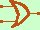

|
Anche la disgiunzione inclusiva (o, od anche) e' un'operazione binaria perche' si applica su due proposizioni ed e' definita come l'operazione che applicata a p e q restituisce i seguenti valori di verita' E' utilizzato, oltre al termine vel il simbolo  (vel) (vel)
la proposizione composta e' vera se almeno una delle proposizioni componenti e' vera Cioe' per la verita' della proposizione composta puo' essere vera la prima o puo' essere vera la seconda o possono essere vere entrambe In italiano e' un po' difficile fare un esempio perche' la o ha significato doppio: significa
"Quando vado al cinema compro Pop corn ed anche noccioline e mangio noccioline o popcorn" in questo caso la frase considerata in rosso e' da intendere: mangio noccioline o mangio pop corn o mangio tutti e due
Mentre in italiano la o si puo' interpretare in modo diverso nella lingua latina vengono usate due congiunzioni diverse per indicare:
e -> et o inclusivo -> vel o esclusivo -> aut Anche qui, vista l'importanza del concetto, abbiamo l'equivalenza, all'interno delle proprie teorie, dei simboli ; (punto e virgola) nel discorso  (or) in informatica Per finire mostriamo che vale la proprieta' distributiva della congiunzione logica rispetto alla disgiunzione inclusiva: (p vel q) and r o meglio in formule (p Per dimostrarlo basta calcolare le tavole di verita' per l'espressione prima dell'uguale e per l'espressione dopo l'uguale: se le due tavole sono uguali allora le espressioni sono equivalenti: Prova a farlo per esercizio poi controlla la soluzione il simbolo |

|

|

|

|